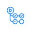

実装運用
第9章 開発の流れに組み込む：設計・レビュー・自動検査
第2〜8章の知識を「気をつける」で終わらせず、設計・レビュー・CI・テストの流れに組み込んで、忘れても引っかかる仕組みにします。設計のときに15分だけ「悪用されたら」を考え、PR テンプレートに観点を入れ、CI に自動検査を足す。この3つで、人が覚えていなくても穴の大半が止まります。AI にコードを書かせる時代の注意点もここで扱います。
- 穴は早く見つけるほど安く直せる（シフトレフト）：設計で見つければ図を直すだけ、運用で見つければ事故対応と作り直し
- 認可モデルの抜け（誰が何に何をしてよいか）は、実装後に見つかると API 全体の作り直しになる
- OWASP Top 10:2025 の A06「安全性を欠いた設計」は、コードをいくら直しても消えない穴のこと
- 設計のときに4つの問いで15分：何を作るのか／何がまずくなりうるか／どう対処するか／それで十分か
- 扱うデータを分類し（個人情報・認証情報・決済情報・社外秘・公開情報）、信頼境界（ブラウザ｜アプリ｜DB｜外部）を線で引く
- STRIDE の6つで「まずいこと」を洗い出す：なりすまし・改ざん・否認・情報漏えい・サービス妨害・権限昇格
- 結果は Markdown 1枚で設計書か PR に残す（この章のワークシートで作れる）
- 実装の約束は3つ：第2章の10のルールを守る／フレームワークの安全な既定値を外さない／エラーは安全側に倒す（fail closed）
- 例外が起きたとき「見せる・通す」側に倒れると、認可がすり抜ける（OWASP A10）
- 利用者に見せるエラーは一般的な文＋問い合わせ番号。詳細はログへ
- レビューは9つの観点で見る：入力・出力・認証・認可・秘密・依存・設定・ログ・エラー
- 観点は PR テンプレートに入れて、毎回思い出さなくても目に入るようにする
- 認可（他人の ID を入れたらどこで弾かれるか）は自動ツールが見つけられないので、人が必ず見る
- 自動検査は CI に、この順で足す：シークレットスキャン（gitleaks）→ 依存スキャン（Dependabot・npm audit・pip-audit・Trivy）→ SAST（Semgrep・CodeQL）→ IaC スキャン（Checkov・Trivy）→ DAST（OWASP ZAP、自分の環境だけ）
- CI のトークンは
permissions: contents: readから始める（最小権限） - 誤検知の除外には、理由と見直し期限を書く
- CI のトークンは
- テストは異常系と認可を自動化する：利用者 A のまま B のデータにアクセスして 403 になるテストを書く。直した脆弱性は回帰テストにする。専門家の脆弱性診断は公開前・大きな変更後・年1回
- AI が書いたコードもレビュー対象：
shell=True・verify=False・MD5 のような危険な既定値を出すことがある。秘密をプロンプトに貼らない- LLM を組み込むアプリでは、外から来た文章（Web ページ・メール・ファイル）を命令として扱わない（プロンプトインジェクション）。ツール実行は最小権限、出力をそのまま SQL やコマンドにしない
- IPA「情報セキュリティ10大脅威 2026」の3位は「AI の利用をめぐるサイバーリスク」
- チームへは小さく始めて続ける：PR テンプレート → チェックリスト → 15分の勉強会 → 振り返りの共有 → 年1回の見直し。担当を1人決める
読み終えたら、本文を見ずに各項目を自分の言葉で説明できるか確かめてください。
- シフトレフト：後で直すほど高くつく
- 設計：データ分類・信頼境界・簡易脅威モデリング（ワークシート付き）
- 実装の約束：10のルール・安全な既定値・fail closed
- レビューの観点と PR テンプレート
- 自動検査を CI へ
- テスト：異常系・認可・回帰・脆弱性診断
- AI コーディングと生成コードの注意
- チームへの広げ方
読む前の問い（答えを予測してから読み進め、読み終えたら答え合わせをしてください）
- 「他人の注文が見える」穴を、設計で見つけた場合と、公開後に見つけた場合で、直す手間はどう違うか。
- 認可の確認処理で例外が起きたとき、
return Trueとreturn Falseのどちらに倒すべきか。 - CI に自動検査を足すなら、最初の1つは何にするか。
1. シフトレフト：後で直すほど高くつく
開発の流れを左から右へ「要件 → 設計 → 実装 → テスト → 運用」と並べたとき、セキュリティの確認をできるだけ左（早い段階）に寄せることをシフトレフトと呼びます。理由は単純で、同じ穴でも見つかる段階が遅いほど、直す手間と被害が大きくなるからです。
OWASP は「実装の不備」と「設計の不備」を区別しています。設計の不備とは、コードをどれだけ正しく書いても消えない穴のことです。例えば「パスワードリセットの秘密の質問」は、実装が完璧でも質問の答えが推測できれば破られます。対策は脅威モデリング（2節）と、安全な設計パターンの採用です（OWASP Top 10:2025 日本語版）。
家の設計図の段階で「浴室に窓がない」と気づけば線を1本足すだけです。建った後に気づけば壁を壊します。住み始めてから泥棒に入られて気づけば、工事に加えて失った物は戻りません。セキュリティも同じで、図面の段階で15分使うのが最も安い投資です。
2. 設計：データ分類・信頼境界・簡易脅威モデリング
脅威モデリングと聞くと大がかりに思えますが、開発者が設計のときにやるのは4つの問いに15分で答えることです。
機能の一言説明、扱うデータの分類、入口（Web 画面・API・アップロード・外部連携・バッチ）、信頼境界の図。
STRIDE の6分類に沿って、1つずつ「この機能で起きたら」を考える。思いつかない分類は「なし」でよい。
各「まずいこと」に、第2〜8章の対策を1つ割り当てる。入力検証・認可チェック・ログ・レート制限など。
対処できないものは「受け入れる」と書いて理由を残す。設計書か PR に Markdown で添付する。
データを分類する
最初にやるのは、その機能が扱うデータを分類することです。分類が決まれば、暗号化・ログに書いてよいか・保持期間・誰が見てよいかが、ほぼ自動で決まります（第5章 7.）。
| 分類 | 例 | 決まること |
|---|---|---|
| 認証情報 | パスワード、セッション ID、API キー、トークン | 平文で保存しない、ログに書かない、漏れたら即ローテーション |
| 決済情報 | カード番号、口座番号 | 原則として自分で持たず決済代行に任せる。持つなら法令・業界基準に従う |
| 個人情報 | 氏名、住所、メール、購入履歴 | 本人と権限者だけが見られる認可、保存の暗号化、保持期間、漏えい時の報告義務 |
| 社外秘 | 売上、仕様書、ソースコード | 社内でも役割で絞る、持ち出しのログ |
| 公開情報 | 商品カタログ、お知らせ | 機密性より完全性（改ざんされない）と可用性を守る |
信頼境界を線で引く
信頼境界とは、「ここから先は信用できない」が切り替わる線です。線をまたいで入ってくるデータは、すべて検証と認可の対象になります。
STRIDE：まずいことを6つの箱で洗い出す
STRIDE は「まずいこと」を6種類に分けた覚え方です。思いつきで洗い出すと偏るので、6つの箱を順に見ます。
| 頭文字 | 一言 | この機能で起きたら？（例：注文履歴 API） | 対策の章 |
|---|---|---|---|
| S Spoofing | なりすまし | 他人のセッション ID で注文履歴を見られる | 第4章 4. |
| T Tampering | 改ざん | 注文金額や配送先を書き換えられる | 第3章 7. |
| R Repudiation | 否認 | 「その注文はしていない」と言われて証明できない | 第8章 2. |
| I Information disclosure | 情報漏えい | 注文 ID を変えると他人の履歴が見える | 第4章 6. |
| D Denial of service | サービス妨害 | 大量リクエストで履歴 API が止まる | 第7章 5. |
| E Elevation of privilege | 権限昇格 | 一般利用者が管理者用の全件取得を呼べる | 第4章 6. |
なりすまし・かいざん・ひにん・ろうえい・サービスぼうがい・権限しょうかく。6つを順に唱えながら「この機能で起きたら」を1つずつ考えます。
機能を1つ思い浮かべて埋めてください。下に Markdown ができるので、コピーして設計書や PR の説明に貼れます。入力は保存されません。
- 設計書に「扱うデータの分類」と「入口」を書く（3分）。
- 信頼境界の図を描く。線をまたぐ矢印を数える（3分）。
- STRIDE を順に唱えて、矢印ごとに「起きたら」を1つずつ書く（6分）。
- 各項目に対策の章を割り当て、対処しないものは「受け入れる」と理由を書く（3分）。
チェックリストの「設計のとき」d5 がこの作業です。
3. 実装の約束：10のルール・安全な既定値・fail closed
実装の約束は3つです。1つ目は第2章の10のルールをチームのセキュアコーディング規約の最小セットにすること。2つ目は、フレームワークが用意している安全な既定値を外さないこと（テンプレートの自動エスケープ、ORM、CSRF 対策、セッション管理）。既定値を外す書き方（|safe、innerHTML、生 SQL、csrf_exempt）は、それ自体をレビューの対象にします。3つ目が、この節で詳しく扱うエラーを安全側に倒すことです。
エラーは安全側に倒す（fail closed）
OWASP Top 10:2025 に新しく入った A10「例外的な状況への不適切な対応」は、エラーや想定外の状況で「通す・見せる」側に倒れてしまう穴のことです。fail closed（失敗したら閉じる）が原則です。
Pythondef can_view(user, order):
try:
return order.owner_id == user.id or user.is_admin
except Exception:
# DB が落ちた・値が None だった、などの時に…
return True # 「見せる」側に倒れているPythondef can_view(user, order):
try:
return order.owner_id == user.id or user.is_admin
except Exception:
log.exception("authz check failed",
extra={"user": user.id, "order": order.id})
return False # 迷ったら拒否（fail closed）JavaScript（Express）app.use((err, req, res, next) => {
res.status(500).send(err.stack);
// ファイルパス・ライブラリ名・SQL が丸見え
});JavaScript（Express）app.use((err, req, res, next) => {
const ref = crypto.randomUUID();
logger.error({ ref, err, path: req.path, user: req.user?.id });
res.status(500).json({ message: "処理に失敗しました", ref });
});- 「とりあえず
except: pass」は fail open の典型です。握りつぶした例外の先で、認可や検証が飛ばされていないか確かめます。 - タイムアウトや外部 API の失敗も「例外的な状況」です。認可サービスに繋がらないときに「通す」設定になっていないか見ます。
- 依存ライブラリの追加・更新もコードの変更です。
package.jsonの差分はレビューの対象にします（第6章 6.）。
4. レビューの観点と PR テンプレート
セキュリティの観点は9つに整理できます。全部を毎回思い出すのは無理なので、PR テンプレートに書いておいて目に入るようにするのが現実的なやり方です。
| 観点 | 見るところ | レビューで言う一言 |
|---|---|---|
| 入力 | 外から来た値がサーバー側で検証されているか。型・長さ・範囲・許可リスト | 「この値、サーバー側でも検証していますか？」 |
| 出力 | HTML・SQL・コマンドに文字列をつないでいないか。自動エスケープを外していないか | 「この innerHTML、textContent ではだめですか？」 |
| 認証 | 自作のログイン処理、パスワードの保存方法、セッションの作り方 | 「このパスワード、bcrypt か Argon2 ですか？」 |
| 認可 | すべての API で所有者・役割を確認しているか。確認が1か所にまとまっているか | 「他の利用者の ID を入れたら、どこで弾かれますか？」 |
| 秘密 | 鍵・パスワード・トークンがコードや設定ファイルに入っていないか | 「この鍵、環境変数に出せますか？」 |
| 依存 | 追加されたライブラリの必要性・メンテ状況、lock ファイルの更新、audit の結果 | 「この追加、代わりに標準ライブラリでできませんか？」 |
| 設定 | 公開範囲・ポート・権限・デバッグモード・CORS の変更 | 「このポート、外から見える必要がありますか？」 |
| ログ | 誰が何をしたかが残るか。トークンや個人情報がそのまま出ていないか | 「このログ、トークンがそのまま出ていませんか？」 |
| エラー | 例外時に通す側に倒れていないか。画面に内部情報が出ないか | 「この except、拒否側に倒れていますか？」 |
PR テンプレートの例
.github/pull_request_template.md に置くと、PR を作るたびに自動で本文に入ります。項目は本サイトのチェックリストの「Markdown でコピー」で作れます。該当しない項目は「該当なし」と書けばよく、空欄のままにしないのがルールです。
Markdown## 概要
<!-- 何を・なぜ -->
## セキュリティの確認（該当しないものは「該当なし」と書く）
- [ ] 入力：外から来る値はサーバー側で検証した（型・長さ・範囲・許可リスト）
- [ ] 出力：SQL はプレースホルダ、HTML は自動エスケープのまま
- [ ] 認可：他人の ID でアクセスして 403/404 になることを確かめた
- [ ] 秘密：鍵やトークンをコード・設定ファイルに入れていない
- [ ] 依存：追加したライブラリの理由を書いた。audit は通った
- [ ] 設定：公開範囲・権限・デバッグモードの変更はない（あれば理由）
- [ ] ログ：誰が何をしたかが残る。トークン・個人情報を出していない
- [ ] エラー：例外時は拒否側。画面に内部情報を出さない
## 脅威モデリング（新機能のとき）
<!-- ワークシートの Markdown を貼る -->飛行機のパイロットは何千時間飛んでいても、離陸前にチェックリストを声に出して読みます。覚えていないからではなく、覚えていても飛ばすことがあると知っているからです。PR テンプレートは開発者のためのそれです。
5. 自動検査を CI へ
人が見る観点（4節）に加えて、機械が得意なものはCI に任せます。ツールは5種類あり、導入しやすく効果の高い順に足していきます。
| 順 | 種類 | 見つけるもの | 代表的なツール | 導入の手間 |
|---|---|---|---|---|
| 1 | コミットに混ざった鍵・パスワード・トークン | gitleaks、GitHub secret scanning（公開リポジトリは自動。push protection も） | 小。設定ほぼ不要 | |
| 2 | 依存スキャン | 使っているライブラリの既知の脆弱性（CVE） | Dependabot、npm audit、pip-audit、Trivy、Snyk | 小。lock ファイルがあれば動く |
| 3 | SAST（静的解析） | コードの危険な書き方（文字列連結の SQL、shell=True、弱いハッシュ） | Semgrep、CodeQL（GitHub code scanning） | 中。誤検知の調整が要る |
| 4 | Terraform・Dockerfile・Kubernetes の設定ミス（公開バケット、root 実行） | Checkov、tfsec、Trivy（config） | 中。IaC があれば | |
| 5 | DAST（動的検査） | 動いているアプリに実際にリクエストを送って見つける穴 | OWASP ZAP（自分の環境だけに向ける） | 大。テスト環境と時間が要る |

CIシークレット・依存・SASTGitHub Actions の例：シークレットスキャンと依存スキャン
最初の2つを PR で動かす最小の例です。permissions: contents: read で、ワークフローのトークンを読み取りだけにしているところも要点です（第7章 7.）。
YAML（.github/workflows/security.yml）name: security-checks
on: [pull_request]
permissions:
contents: read # トークンは最小権限から始める
jobs:
secrets:
runs-on: ubuntu-latest
steps:
- uses: actions/checkout@v4
with:
fetch-depth: 0 # 履歴も走査する
- uses: gitleaks/gitleaks-action@v2
env:
GITHUB_TOKEN: ${{ secrets.GITHUB_TOKEN }}
# 組織アカウントはライセンス設定が要る。公式 README を確認
deps:
runs-on: ubuntu-latest
steps:
- uses: actions/checkout@v4
- uses: actions/setup-node@v4
with:
node-version: 22
- run: npm ci
- run: npm audit --audit-level=high # High 以上で失敗させるPython なら pip install pip-audit && pip-audit -r requirements.txt、コンテナなら trivy image を同じ要領で足します。Dependabot は .github/dependabot.yml を置くだけで更新 PR を作ってくれます（第6章 5.）。
秘密 → 依存 → 静的解析 → 設定（IaC）→ 動的検査。前の2つは設定がほぼ要らず、効果が大きい。後ろに行くほど手間が増えるので、前から順に。
- SAST は誤検知（問題ないのに警告）が出ます。黙らせるために全部除外すると、本物も消えます。除外には理由と見直し期限をコメントで書く（例：
# nosemgrep: 入力は許可リストで検証済み。2027-04 に見直し）。 - 「CI が赤いのが当たり前」になると誰も見なくなります。最初は High 以上だけで失敗させ、慣れたら基準を上げます。
- DAST を本番や他人のサービスに向けてはいけません。自分のテスト環境だけです（学び方 5.）。
6. テスト：異常系・認可・回帰・脆弱性診断
通常のテストは「正しい入力で正しく動くか」を見ます。セキュリティのテストは「間違った入力・間違った人で、正しく拒否するか」を見ます。自動テストに次の3種類を足します。
| 種類 | 何を書くか | 例 |
|---|---|---|
| 異常系テスト | 想定外の入力で 400 系が返り、処理が進まないこと | 負の数量、長すぎる文字列、別の型、空、記号だけ |
| 認可テスト | 利用者 A のまま B のデータにアクセスして 403 か 404 になること。一般利用者が管理 API を呼べないこと | 下のコード |
| 回帰テスト | 直した脆弱性が再発しないこと。修正 PR には必ず「その穴を突くテスト」を添える | XSS を直したら、<script> を含む入力がエスケープされて出ることを確かめる |
Python（pytest）def test_other_users_order_is_forbidden(client, user_a, order_of_b):
client.login(user_a)
res = client.get(f"/api/orders/{order_of_b.id}")
assert res.status_code in (403, 404) # 存在を教えたくなければ 404 でもよい
def test_user_cannot_call_admin_api(client, user_a):
client.login(user_a)
res = client.get("/api/admin/orders")
assert res.status_code == 403専門家の脆弱性診断を頼む
自分たちのテストと自動検査では見つけにくい穴（認可の設計、業務ロジックの悪用、組み合わせ）は、第三者の脆弱性診断に頼ります。
| いつ | 頼み方で決めること |
|---|---|
| 公開前／大きな変更後／年1回 | 範囲（どの URL・API・アカウント種別）、環境（本番か検証環境か。データは本物でないこと）、期間（いつからいつまで。監視チームに連絡）、報告形式（深刻度と再現手順、修正の確認を含むか） |
バグバウンティ（報奨金制度）もありますが、報告を受け付けて期限内に直す体制が先です。
7. AI コーディングと生成コードの注意
AI にコードを書かせることは、もう特別なことではありません。注意点は2つに分かれます。AI が書いたコードを自分のプロダクトに入れるときと、AI（LLM）を自分のアプリに組み込むときです。IPA「情報セキュリティ10大脅威 2026」では「AI の利用をめぐるサイバーリスク」が初めて3位に入りました。
AI が書いたコードを取り込むとき
| 起きること | どうするか |
|---|---|
学習データに多い古い書き方・危険な既定値をそのまま出す（subprocess.run(cmd, shell=True)、requests.get(url, verify=False)、hashlib.md5、文字列連結の SQL、cors({ origin: "*" })） | 生成コードも人が書いたコードと同じレビューにかける。4節の9観点と SAST を通す。生成時に「プレースホルダを使う」「shell=True を使わない」と指示を添える |
| 存在しないライブラリ名や関数を出す（ハルシネーション）。その名前で悪意あるパッケージが登録されていることがある | 追加するパッケージは公式レジストリで作者・ダウンロード数・更新日を確かめる（第6章 6.） |
| プロンプトに貼った秘密情報・顧客データが外部サービスに送られる | 鍵・個人情報・社外秘はプロンプトに貼らない。会社の利用ルールに従う |
| 「動いた」で満足し、異常系・認可を考えていないコードになる | 6節のテスト（異常系・認可）を生成コードにも書く |
Pythonimport subprocess, hashlib
subprocess.run(f"convert {filename} out.png", shell=True)
digest = hashlib.md5(password.encode()).hexdigest()
r = requests.get(url, verify=False)Pythonimport subprocess
from argon2 import PasswordHasher
subprocess.run(["convert", filename, "out.png"], shell=False, check=True)
digest = PasswordHasher().hash(password)
r = requests.get(url) # 既定で証明書を検証するLLM を自分のアプリに組み込むとき：プロンプトインジェクション
プロンプトインジェクションは、LLM に読ませる文章の中に「これまでの指示を無視して〇〇せよ」のような命令を仕込む攻撃です。第3章のインジェクションと同じ構造で、データ（読ませる文章）と命令（開発者の指示）を LLM が区別できないことが原因です。完全に防ぐ方法はまだないので、被害を限定する設計にします。
| 原則 | 具体的に |
|---|---|
| 外から来た文章を命令として扱わない | Web ページ・メール・アップロードされたファイル・検索結果は「信用できないデータ」として渡し、システムプロンプトと分ける。それでも混ざる前提で次の2つを守る |
| ツール実行は最小権限と確認 | LLM が呼べる API・DB 操作は読み取り中心に絞る。削除・送金・メール送信のような取り消せない操作は人の確認を挟む。LLM に渡す認証情報は利用者本人の権限を超えない |
| 出力をそのまま実行しない | LLM の出力を SQL・OS コマンド・HTML として直接使わない。第3章と同じく、プレースホルダ・引数配列・エスケープを通す |
| 秘密をプロンプトに入れない | システムプロンプトは「読まれる前提」で書く。鍵や内部 URL を入れない。利用者ごとのデータは利用者の認可を通してから渡す |
「AI が生成したコードに脆弱性、〇〇が注意喚起」「AI アシスタントに細工した文書を読ませて情報を抜き取る手口」。前者は生成コードをレビューせず取り込んだ話で、対策は「人が書いたコードと同じレビューと自動検査」。後者はプロンプトインジェクションで、対策は「外から来た文章を命令にしない・ツールは最小権限・出力をそのまま実行しない」です。「AI だから特別な対策が要る」のではなく、第3章と第4章の原則をそのまま当てはめます。
IPA「情報セキュリティ10大脅威 2026」（組織 3位「AI の利用をめぐるサイバーリスク」、公式ページ）。OWASP Top 10 for Large Language Model Applications（1位がプロンプトインジェクション）。OWASP Threat Modeling Cheat Sheet（4つの問い）。GitHub Docs の Code security（code scanning・secret scanning・Dependabot）。
8. チームへの広げ方
1人で全部を守り続けることはできません。仕組みにして、チームで回します。大きな制度を作るより、小さく始めて続けるほうが定着します。
4節の例を .github/pull_request_template.md に置く。これだけで全員の目に観点が入る。
5節の YAML を入れる。High 以上で止める。止まった PR が出たら、それが最初の教材になる。
本サイトの章を1つ選び、「自分たちのコードのどこに当てはまるか」だけ話す。長くしない。
インシデントやヒヤリとした出来事を、個人を責めずに「仕組みのどこを直すか」で振り返る（第8章 5.）。
チェックリスト・権限・公開範囲・依存の EoL を見直す。IPA 10大脅威と OWASP Top 10 の新版を読む（チェックリスト運用 o7）。
専任でなくてよい。脆弱性情報を受け取り、CI の警告を見て、年1回の見直しを呼びかける人。
- 自分の次の PR の説明に、4節の9観点から該当する1つだけ「〜を確認した」と書く。チーム全員でなく自分から始める。
- 新機能の設計レビューで、「この機能が悪用されたら、誰が何を失いますか？」と1回だけ聞く。
- CI が止めた PR が出たら、「止まってよかった例」として共有する。止めたことを責めない。
- シフトレフト
- セキュリティの確認を開発の早い段階（要件・設計）に移すこと。早いほど直すのが安い。
- 脅威モデリング
- 作るものに対して「何がまずくなりうるか」を体系的に洗い出し、対策を決める設計の作業。4つの問いと STRIDE で15分。
- 信頼境界
- 「ここから先は信用できない」が切り替わる線。線をまたぐデータはすべて検証・認可の対象。
- STRIDE
- なりすまし・改ざん・否認・情報漏えい・サービス妨害・権限昇格の6分類。脅威の洗い出しに使う。
- fail closed
- 失敗・エラー時に拒否側に倒れる設計。反対の fail open は失敗時に通してしまう。
- SAST／DAST
- SAST は実行せずにコードを解析する静的検査。DAST は動いているアプリにリクエストを送る動的検査。
- IaC スキャン
- Terraform・Dockerfile などの設定ファイルを解析して、公開バケットや root 実行のような設定ミスを見つける検査。
- 誤検知
- 問題がないのに警告が出ること。除外するときは理由と見直し期限を書く。
- プロンプトインジェクション
- LLM に読ませる文章に命令を仕込み、開発者の意図と違う動作をさせる攻撃。データと命令の混同が原因。
- ハルシネーション
- AI が事実でない内容をもっともらしく出すこと。存在しないパッケージ名を出すと悪用されうる。
🧠 想起練習
本文を見ずに答えを思い出してから、各項目を開いて確認してください。